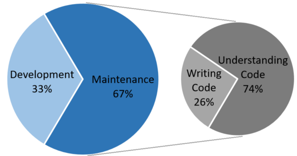

Developing software is a complicate and challenge task. Maintaining and evolving a software can be so complicated as build it. As the software evolves, it is modified and adapted to new requirements, becoming more complex and deviating from its original architecture. Therefore, most of the software development costs are their maintenance. During this period, the majority of the time is spent trying to understand the software, exploring unfamiliar code, as shown in the graph below.
When, even after a long time analyzing, the developer cannot understand some code and there’s no documentation, or it is poor, the developer rewrites the code. This facilitates inserting bugs and unwelcome changes in system behavior.
Therefore, in addition to designing and maintaining a good architecture, the developers have to strive to write clean and readable code. So, the first step is to accept that source code is documentation. Source code has to say what it does clearly. Software must be built in such a way that other developers understand it easily. In this context, we will discuss throughout this article some practices that make possible the better understanding of software.
According to agile methods, the source code is the main way of documenting software because it is the only one that is sufficiently detailed and precise. Then, if the source code legibility is not good, the maintenance, evolving and reworking costs increase. So, how to write clean and easy-to-understand code? It is not simple, but some basic recommendations can help, such as the following.
Give meaningful names to variables, methods and classes (even if they become long). If the class or method name describes what it does, and if the field name informs what it has, it is not necessary to write a comment to inform it. The idea is that, when we read a variable or method name, we can understand what it does. Below, two code examples shows the same variable declaration was written in two different ways.
Bad code:
int d; // elapsed time in days
Better code:
int elapsedTimeInDays;
Big methods are hard to read and understand, mainly if it has a lot of responsibilities. Write small methods, even they have only 3 or 4 lines. Each method should have only one responsibility and its name should describe it. When it is hard to choose a descriptive name to a method, probably, the method is big or is doing more than one thing. If some method is big, extract each functionality in smaller methods.
When writing a code, keep in mind that it can be reused in another part of the system itself or in other systems, inclusive, it can be saved in a repository of software components. Therefore, classes and methods must be decoupled as much as possible. Do not be lazy to create new classes! New subjects and new features demand new classes and new methods.
One of the ways to know, in general, what is being done in the project is to keep track of version logs. The team can quickly learn what each team member is doing. The logs assist in identifying the point where a defect was inserted. They are used to record marks for publication in servers. They are also fundamental when there is a need to go back to a version where certain functionality has changed.
All of the advantages mentioned above are compromised when the developer does not log the commit or the log is not meaningful. Therefore, commits should be done, preferably, by task, with succinct and meaningful descriptions in the logs. This keeps the codes separate and assists in understanding the classes and files related to a given functionality. In this respect, a commit must be done carefully, observing each changed class, discarding unnecessary changes and ensuring that it will not break the build.
A clean code tells you what it does, but it does not show clearly your intention and why it was done that way. For this, you can use comments, it is an important resource to complement the understanding of the code.
Is the code complicated? First, try to make it uncomplicated, and then, comment it! There are algorithms with formulas, optimizations and calculations that are more complex than normal. In these cases, clean codes and meaningful names may not be sufficient.
There are special comments like "TODO" and "FIXME", that are used to record reminders to future improvements and corrective tasks. Use them when a code is incomplete, incorrect or can be improved but you do not have time to make it at this time.
Use comments also to insert references to provide more information about the chosen algorithm. If there is a task control, inform the link to the task related to the code. Did you use an algorithm from a paper? Did you reuse an algorithm from some platform or website? Inform the source in the comments.
Considering the source code as the main way of documenting does not mean that we can abandon external documentation. Software documentation includes all documents describing the system, from requirements specification to final tests plan.
In short, it is of great importance to take care that teammates and future maintainers can understand what you code. Take advantage of opportunities of other people reading your code. Find out what people found easy to understand and what they found confused. After all, clean and well-documented code makes the maintenance easier, reduces costs and stress and saves time!
[1] Andrew Ko; Brad Myers; Michael Coblenz; HtetHtet Aung. An Exploratory Study of How Developers Seek, Relate, and Collect Relevant Information during Software Maintenance Tasks. IEEE. p. 971-987. 2006.
[2] Stephen Schach. Object-Oriented and Classical Software Engineering. McGraw-Hill, New York, USA. 2006.